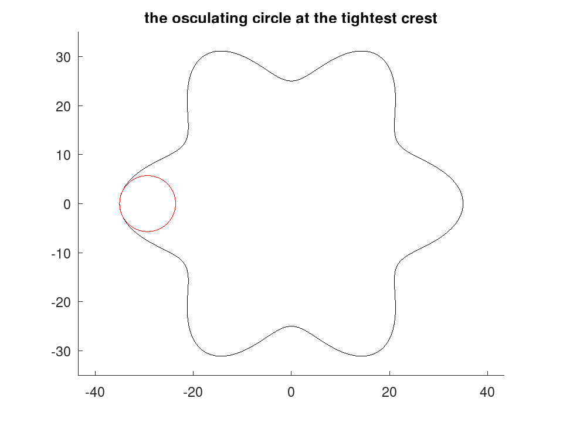

geom.curvature
drafting: K = geom.curvature (P)
drafting: K = geom.curvature (P, CLOSED)
drafting: [K, R] = geom.curvature (…)
Signed curvature of a sampled planar curve.
K = geom.curvature (P) returns the signed curvature at
each point of the curve whose points are the rows of the -by-2 matrix
P. K is an -by-1 vector in reciprocal units of P,
so with the package convention of millimetres it is in reciprocal
millimetres.
K = geom.curvature (P, CLOSED) treats the curve as
closed when CLOSED is true, joining the last point to the first. An
explicitly repeated closing point is accepted and ignored. CLOSED
defaults to false.
[K, R] = geom.curvature (…) additionally returns the
signed radius of curvature R, which is 1 ./ K. A straight
run gives zero curvature and an infinite radius; neither is an error.
The sign carries the direction of turning. K is positive where the
curve turns counter-clockwise, so on a counter-clockwise closed curve a
positive value means the centre of curvature lies on the interior side. This
is the sign an inward offset must respect: an inward offset of D is
geometrically valid only where D does not exceed 1 / K at
every point whose curvature is positive.
The curvature at a point is that of the circle through it and its two
neighbours, which is exact for points sampled from a circle at any spacing
and needs no estimate of a derivative. On an open curve the two end points
have no such neighbourhood and are returned as NaN.
Three coincident or collinear points give zero curvature rather than an error, since a sampled curve legitimately contains straight runs.
See also: geom.curveoffset, geom.curvesample, geom.selfintersects
Source Code: geom.curvature
Curvature is measured from the circle through each point and its two neighbours, so it is exact for points taken off a circle at any spacing. The sign says which way the curve turns.
t = linspace (0, 2*pi, 361)(1:360)';
P = (30 + 5 * cos (6 * t)) .* [cos(t), sin(t)];
[K, R] = geom.curvature (P, true);
printf ('tightest radius %.2f mm at a crest, %.2f mm in a root\n', ...
min (abs (R(K > 0))), min (abs (R(K < 0))));
tightest radius 5.71 mm at a crest, 4.06 mm in a root
D = draw.Drawing ().polyline (P, true);
D.Colour = 'red';
[~, i] = max (K);
D = D.circle (P(i,:) - R(i) * (P(i,:) / norm (P(i,:))), abs (R(i)));
plot (D);
title ('the osculating circle at the tightest crest');
